LAUNCH ICT
Year A | Autumn 2 Week 2 | 9 November 2026
Identity & Belonging

Year A | Autumn 2 Week 2 | 9 November 2026
Identity & Belonging
I can give my document a clear title.
I can group facts under headings.
I can write short, clear paragraphs.
I can save and check my work.
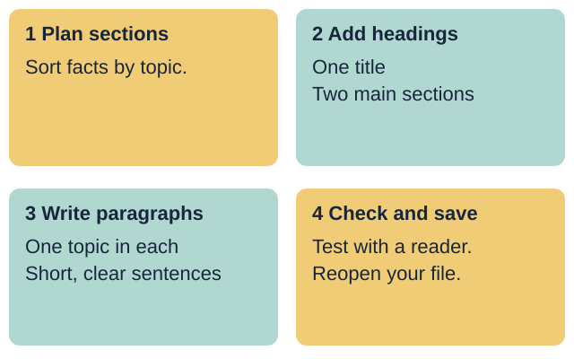
Your response: Choose one skill to practise today.
Introduce a fictional hobby-group welcome sheet for someone thinking of joining. All facts come from supplied made-up source cards. Keep personal names, contacts, places and meeting details out of the task.
Where did you save your file?
How did you check that it saved?
What makes a file name useful?
Use a made-up profile again today.
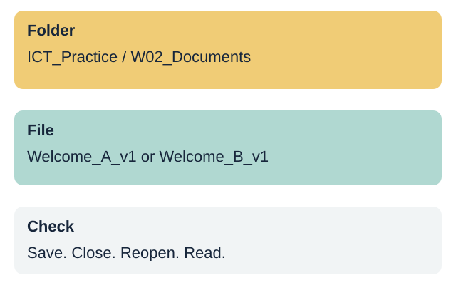
Your response: Show or explain the save-and-open check.
Retrieve the Week 1 routine: agreed folder, useful file name, save, close, reopen and verify text. If the prior file is absent, model with a blank practice document. Do not imply that missing prior work is complete.
Find who can join. Which page helps you?
The page with clear headings makes the joining facts easier to find.
Both pages need accurate words. A neat page can still contain mistakes.
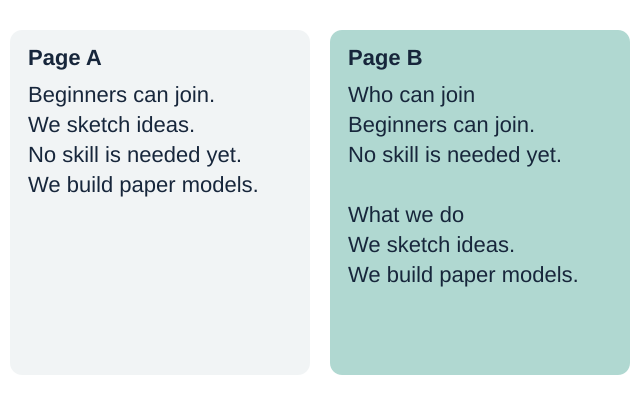
Your response: Choose a page and explain what helped.
Compare the same facts in an unbroken block and under meaningful headings. Ask pupils to locate who can join. Explain that structure helps the reader scan, not just makes a page look attractive.
Give the whole page one clear title.
Use a heading style for each main section.
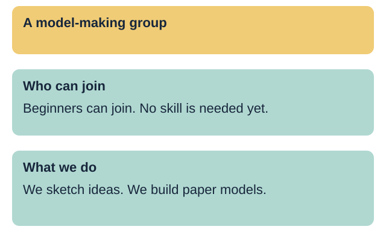
Your response: Show the title and the two main headings.
Demonstrate the built-in title style for the document title and the same heading level for main sections. Use the tool's equivalent if labels differ. Show Who can join and What we do. A larger or bold font alone does not create structural heading information. Do not use a table or repeated spaces to lay out the prose.
Put facts about the same topic together.
Write short sentences with full stops.
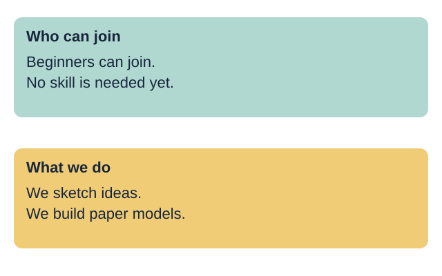
Your response: Point to the facts that belong together.
Model two sentences about joining, then two about the activity. Use normal paragraph text under the heading. Use paragraph breaks between sections, not a new line after every word. Leave clear space and keep text left aligned. Read the model aloud.
title: the name of the whole document
heading: a label for one section
paragraph: sentences about one topic
style: a set format with a text role
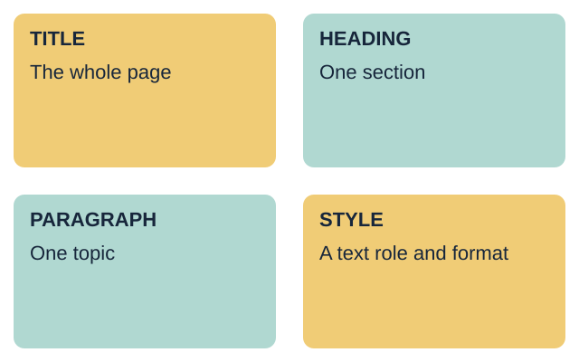
Your response: Explain one word using the model page.
Teach the four terms with the marked page. The styles menu gives text a role, such as heading, as well as a consistent appearance. Keep to one main heading level in this short document.
Beginners can join. No skill is needed yet.
We sketch ideas. We build paper models.
Who can join: beginners; no skill is needed yet.
What we do: sketch ideas; build paper models.
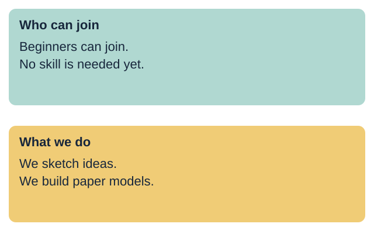
Your response: Match each pair of facts to its heading.
Use Model group source A. Joining facts go under Who can join. Sketching and building facts go under What we do. Allow pointing or moving printed cards before typing. Each pupil should explain one choice.
Can your partner find one fact quickly?
Read one paragraph. Does it make sense?
A useful heading tells the reader what is in that section.
Move a fact to the right section or fix a sentence that is hard to follow.
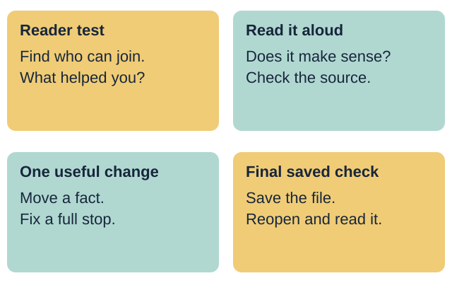
Your response: Give one useful change for this reader.
Ask the partner to find who can join without coaching. Then read one paragraph aloud or have staff read it back. Check source accuracy, missing full stops, accidental repeats and private details. Give specific feedback. Avoid judging the pupil's general literacy from this short task.
Supported: use the heading and sentence frame.
Independent: build your page from the facts.
Aspire: add a useful section and test it.
Each person saves and checks their own file.
Your response: Choose a route and start your document.
Slides 10-13 share this 12-minute task time. Each learner makes their own short welcome sheet. A shared device uses six-minute turns: source A then source B, with operator and reader roles. Keep the focus on structure and two accurate paragraphs.
Choose made-up source A or source B.
Use the title and two heading prompts.
Write one short paragraph under each heading.
Use the style controls with help.
Save, reopen and check your document.
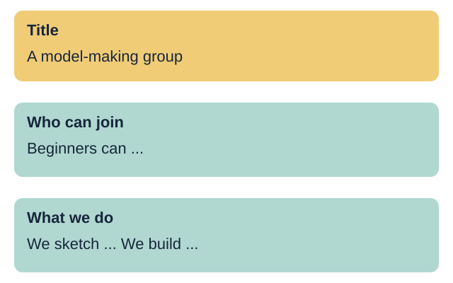
Your response: Show one heading and the facts beneath it.
Offer a blank document or use the editable route page as a planning frame. The pupil creates a new digital document. Provide one instruction at a time or exact scribing, then record that support. Aim for two short sentences per paragraph; accept one accurate sentence initially and record the next step.
Give the document one clear title.
Add two useful headings with heading styles.
Write two short, accurate paragraphs.
Check the facts, spacing and full stops.
Save your file, then reopen it to check.
Your response: Ask your reader to find who can join.
The pupil uses the chosen source card, not a model to copy blindly. Check genuine heading styles and normal body text. Save in the agreed Week 2 folder under Welcome_A_v1 or Welcome_B_v1 with the software's native extension.
Complete the Independent task first.
Add a useful section from the source facts.
Use the same main heading level.
Ask a reader to test the new section.
Save a new version and explain one change.
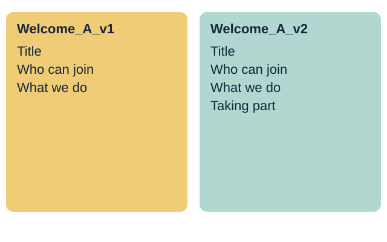
Your response: Show how a change helped your reader.
Use the source's turn-taking facts to create a Taking part section. Keep the same heading level as the other sections. Do not invent dates, fees or places. Save a separate v2 copy and retain v1. Explain a specific improvement using reader feedback.
My file name is ...
My title tells the reader ...
My headings help the reader find ...
I changed ... because ...
I reopened the saved file and checked it.
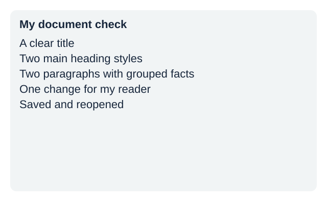
Your response: Record your own choices and the help used.
Observe title, two real heading styles, grouped paragraphs and reopen result. Record actual prompts or scribing. One next-step prompt is followed by the pupil's response and an adult acknowledgement. Do not prefill success or use the partner's file as individual evidence.
Show your title, headings and paragraphs.
Explain one choice that helps the reader.
Open your saved file and check the text.
Your response: Show your document and give one reason.
Three minutes for individual checks, two for feedback and close. Check the saved version, not just the open draft. Week 3 evaluates sources. Week 7 is the assessing lesson; this is formative. Keep unfinished checks marked not yet observed.